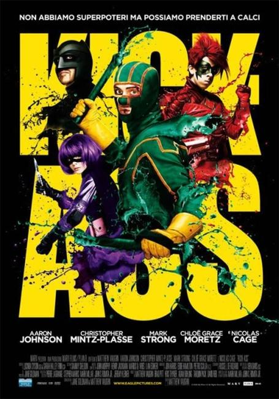
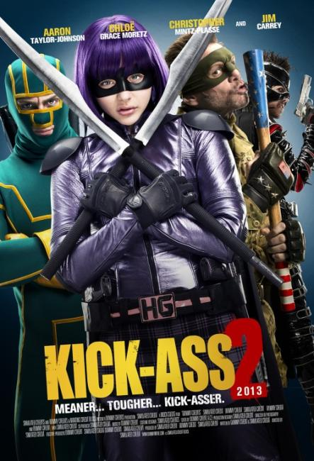

The greatest super hero comic of all-time is finally here. Have you ever wanted to be a super hero? Dreamed of donning a mask and just heading outside to some kick-ass? Well, this is the book for you--the comic that starts where other super hero books draw the line. KICK-ASS is realistic super heroes taken to the next level. Miss out and you're an idiot!

Kick-Ass is a 2010 British-American superhero black comedy film based on the comic book of the same name by Mark Millar and John Romita, Jr. which was published by Marvel Comics. The film was directed by Matthew Vaughn, who produced with Brad Pitt and co-wrote the screenplay with Jane Goldman. The film was produced in Toronto, Canada. Its general release was on 25 March 2010 in the United Kingdom and on 16 April 2010 in the United States. It is the first installment of the Kick-Ass film series.
It tells the story of an ordinary teenager, Dave Lizewski (Aaron Johnson), who sets out to become a real-life superhero, calling himself "Kick-Ass". Dave gets caught up in a bigger fight when he meets Big Daddy (Nicolas Cage), a former cop who, in his quest to bring down the crime boss Frank D'Amico (Mark Strong) and his son (Christopher Mintz-Plasse) (Red Mist), has trained his eleven-year-old daughter (Chloë Grace Moretz) to be the ruthless vigilante Hit-Girl.

Despite having generated some controversy for its profanity and violence performed by a child, Kick-Ass was well received by both critics and audiences. In 2011 it won the Empire Award for Best British Film. The film has gained a strong cult following since its release on DVD and Blu-ray. A sequel, written and directed by Jeff Wadlow and produced by Vaughn, was released in August 2013, with Johnson, Mintz-Plasse, and Moretz reprising their roles.